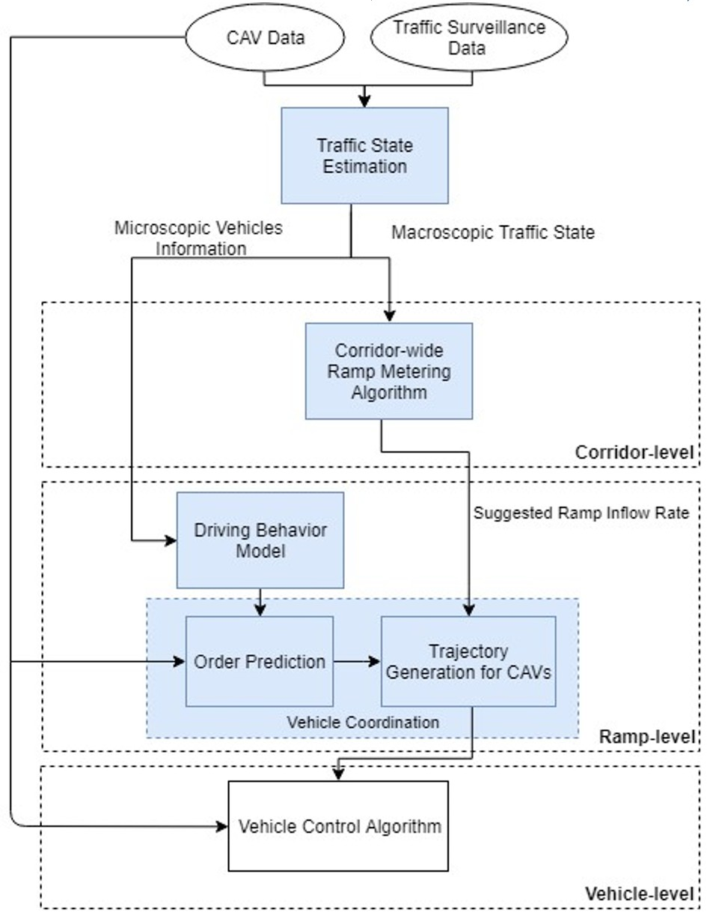
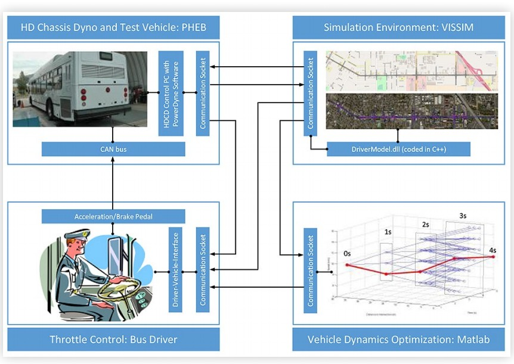
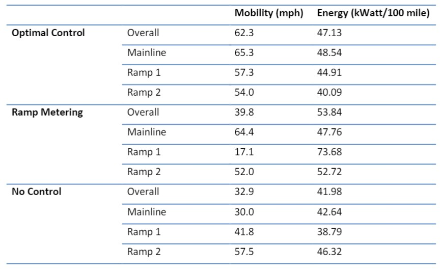

September, 2019
Featured
Zhouqiao Zhao, Ziran Wang, Guoyuan Wu, Mattew J. Barth
IEEE 22nd International Conference on Intelligent Transportation Systems (ITSC), Auckland, New Zealand, Oct. 2019.

Ramp metering, a traditional traffic control strategy for conventional vehicles, has been widely deployed around the world since the 1960s. On the other hand, the last decade has witnessed significant advances in connected and automated vehicle (CAV) technology and its great potential for improving safety, mobility and environmental sustainability. Therefore, a large amount of research has been conducted on cooperative ramp merging for CAVs only. However, it is expected that the phase of mixed traffic, namely the coexistence of both human-driven vehicles and CAVs, would last for a long time. Since there is little research on the system-wide ramp control with mixed traffic conditions, the paper aims to close this gap by proposing an innovative system architecture and reviewing the state-of-the-art studies on the key components of the proposed system. These components include traffic state estimation, ramp metering, driving behavior modeling, and coordination of CAVs. All reviewed literature plot an extensive landscape for the proposed system-wide coordinated ramp control with mixed traffic conditions.
April, 2020
Guoyuan Wu, Dylan Brown, Zhouqiao Zhao, Peng Hao, Michael Todd, Kanok Boriboonsomsin, Matthew J. Barth, Zhiming Gao, Tim Laclair
SAE Technical Paper, 2020-01-1057, Detroit, MI, Jun. 2020

Today’s transportation is quickly transforming with the nascent advent of connectivity, automation, sharedmobility, and electrification. These technologies will not only affect our safety and mobility, but also our energy consumption, and environment. As a result, it is of unprecedented importance to understand the overall system impacts due to the introduction of these emerging technologies and concepts. Existing modeling tools are not able to effectively capture the implications of these technologies, not to mention accurately and reliably evaluating their effectiveness with a reasonable scope. To address these gaps, a dynamometer-inthe-loop (DiL) development and testing approach is proposed...
December, 2019
Guoyuan Wu, Zhouqiao Zhao, Ziran Wang, Mattew J. Barth
National Center for Sustainable Transportation Research Report

With on-board sensors such as camera, radar, and Lidar, connected and automated vehicles (CAVs) can sense the surrounding environment and be driven autonomously and safely by themselves without colliding into other objects on the road. CAVs are also able to communicate with each other and roadside infrastructure via vehicle-to-vehicle and vehicle-to-infrastructure communications, respectively, sharing information on the vehicles’ states, signal phase and timing (SPaT) information, enabling CAVs to make decisions in a collaborative manner. As a typical scenario, ramp control attracts wide attention due to the concerns of safety and mobility in the merging area. In particular, if the line-of-the-sight is blocked (because of grade separation), then neither mainline vehicles nor on-ramp vehicles may well adapt their own dynamics to perform smoothed merging maneuvers. This may lead to speed fluctuations or even shockwave propagating upstream traffic along the corridor, ...
September, 2019
Zhouqiao Zhao, Ziran Wang, Guoyuan Wu, Mattew J. Barth
IEEE 22nd International Conference on Intelligent Transportation Systems (ITSC), Auckland, New Zealand, Oct. 2019.
Ramp metering, a traditional traffic control strat-egy for conventional vehicles, has been widely deployed aroundthe world since the 1960s. On the other hand, the last decadehas witnessed significant advances in connected and automatedvehicle (CAV) technology and its great potential for improvingsafety, mobility and environmental sustainability. Therefore, alarge amount of research has been conducted on cooperativeramp merging for CAVs only. However, it is expected that thephase of mixed traffic, ...